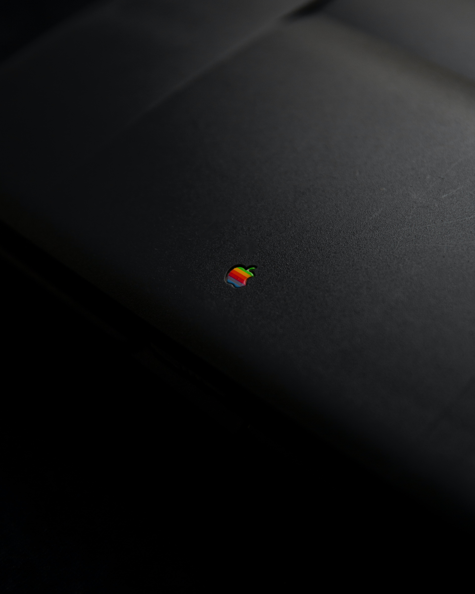

- HTML
- CSS
- JavaScript
HTML
Apple Inc.은 1976년 4월 1일에 설립된 미국의 IT 기업이며
전 세계 최대의 다국적 기업이다.
하드웨어, 소프트웨어, 온라인 서비스를 디자인(설계), 개발, 제조[10](제작), 판매한다. 21세기 실리콘밸리 IT 산업을 대표[11]하는 기업으로
Microsoft, Google, Amazon, Facebook 등과 묶어 빅테크, FAANG[12], MAGA[13] 같은 별칭으로 불린다.

1976년 스티브 잡스와 스티브 워즈니악, 그리고 로널드 웨인이 Apple Computer Company라는 이름으로 창업한 후 차고에서 Apple I을 제작한 것이 시초로, 이후 Apple II가 대히트하여 일약 대성장하기에 이른다.
이후 컴퓨터 시장의 1인자로서 군림하고 있었지만 Apple Lisa로 위기를 맞았다가 심기일전하여 Macintosh를 내놓고, 특히 디자인 소프트웨어의 비약적인 발전으로 어느 정도 자리를 잡는다. 그런데 Apple은 Microsoft와 Mac OS의 디자인을 대여하는 라이선스 계약을 맺을 때 계약서의 내용을 애매하게 놔두는 큰 실수를 범하고 만다.
그 후 Windows는 시장에서 선풍적인 인기를 끌게 되었고, 아차 싶었던 Apple은 "라이선스 계약은 윈도우 1.0에만 적용된다"고 주장하며 소송을 걸지만 무참히 기각되고 만다.
결국 Apple은 Microsoft와의 경쟁에서 밀려 2인자 자리에 머물게 된다. 게다가 갖가지 잡스의 삽질들[14]과 마케팅의 실패로 인해 이사회가 잡스를 해고하기까지 이른다.
여전히 디자인 업계에서는 많은 점유율을 차지하고 있었지만[15] 지나친 제품 종류 확장[16], 차세대 운영체제의 개발 실패 등으로 부도 직전까지 몰리게 된다.
이때 Apple은 잡스가 세운 NeXT사에서 만든 운영체제 NeXTSTEP을 차세대 운영체제로 선택하면서 NeXT사를 인수하게 되고, 잡스를 다시 경영자로 내세운다.
그 후 잡스는 대규모로 인원을 감축[17]함과 동시에, 제품 종류 간소화로 변화를 주도하였고[18] Apple은 1998년 iMac, 2001년 iPod, 2007년 iPhone, 2010년 iPad를 연달아 발표하면서 세계 시가총액 1위 기업이 된다.
그런데 Apple은 Microsoft와 Mac OS의 디자인을 대여하는 라이선스 계약을 맺을 때 계약서의 내용을 애매하게 놔두는 큰 실수를 범하고 만다.
그 후 Windows는 시장에서 선풍적인 인기를 끌게 되었고, 아차 싶었던 Apple은 "라이선스 계약은 윈도우 1.0에만 적용된다"고 주장하며 소송을 걸지만 무참히 기각되고 만다.
결국 Apple은 Microsoft와의 경쟁에서 밀려 2인자 자리에 머물게 된다. 게다가 갖가지 잡스의 삽질들[14]과 마케팅의 실패로 인해 이사회가 잡스를 해고하기까지 이른다.
여전히 디자인 업계에서는 많은 점유율을 차지하고 있었지만[15] 지나친 제품 종류 확장[16], 차세대 운영체제의 개발 실패 등으로 부도 직전까지 몰리게 된다.
이때 Apple은 잡스가 세운 NeXT사에서 만든 운영체제 NeXTSTEP을 차세대 운영체제로 선택하면서 NeXT사를 인수하게 되고, 잡스를 다시 경영자로 내세운다.
그 후 잡스는 대규모로 인원을 감축[17]함과 동시에, 제품 종류 간소화로 변화를 주도하였고[18] Apple은 1998년 iMac, 2001년 iPod, 2007년 iPhone, 2010년 iPad를 연달아 발표하면서 세계 시가총액 1위 기업이 된다.